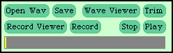
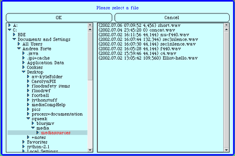
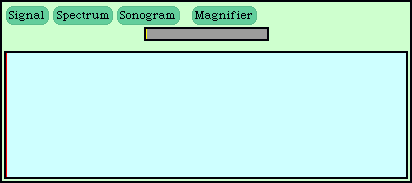

SoundTools allows you to find information about digital audio files.

- Open Wav: Click here to open a .wav file
- Save: Click here to save the sound that is open
- Wave Viewer: Click here to view the sound you have open
(click again to close the Wave Viewer) - Record Viewer: Click here to view different aspects of sound as you record
(click again to close the Record Viewer) - Record: Click here to start recording
- Stop: Click here to stop recording
- Play: Click here to play the sound that is open
To open an audio file in PixelTools:
- Click on "Open Wav" button on the left side of the toolbar
- A dialog box will appear, in which you can browse the files on your computer (see image below). To open a folder, click on the blue triangle; to select a folder, click on the folder's name. All folders appear on the left, while the available sound files in the selected folder appear on the right. Remember, SoundTools only recognizes the audio file type .wav.
- Select a .wav file and click on "OK"

To begin recording, click on the "Record" button in the toolbar.
To stop recording, click "Stop."
Viewing Sounds While you Record Them
To view sounds as you record them, click the Record View button, then the Record button. There are three kinds of views from which you can choose: signal, spectrum, and sonogram.

In the signal view, you’re looking at the sound raw—each increase in air pressure results in an rise in the graph, and each decrease in sound pressure results in a drop in the graph. You can always get back to the signal view from another view by clicking the Signal button.
The spectrum view is a completely different perspective on the sound. The spectrum view shows the different frequencies that are often found in natural sounds. This view is also called the frequency domain.
The sonogram view is very much like the spectrum view in that it’s describing the frequency domain, but it presents these frequencies over time. The sonogram view is great for studying how sounds change over time, e.g., how the sound of a piano key being struck changes as the note fades, or how different instruments di.er in their sounds, or in how different vocal sounds differ.
To save a file in SoundTools:
- Click on the "File" button
- Select "Save as .wav" or ".aiff"
- A dialog box will appear, enter a name for the new sound file and click "Accept."
If you want to edit or copy just a portion of a digital sound, it can be useful to find the index of a specific point in that sound. To do this in SoundTools, simply open the WaveViewer and find the point in the sound for which you would like to know the index by dragging the red vertical bar back and forth. You can test out where you are by using the "Play Before" and "Play After" buttons. When you find the right place, simply note the index as displayed at the upper left side of the display. (see Wave Viewer image below)
Sometimes it can be useful to find the amplitude of a specific point in a sound. To do this in SoundTools, simply open the WaveViewer and find the point in the sound for which you would like to know the amplitude by dragging the red vertical bar back and forth. You can test out where you are by using the "Play Before" and "Play After" buttons. When you find the right place, simply note the amplitude/value as displayed at the upper left side of the display. (see Wave Viewer image below)
The technical term for how a spectrum view is generated is called a Fourier transform. A Fourier transform takes the sound from the time domain (rises and falls in the sound over time) into the frequency domain
(identifying which frequencies are in a sound, and the energy of those frequencies, over time). The specific technique being used in the MediaTools signal view is a Fast Fourier Transform (or FFT), a very common way to do Fourier transforms quickly on a computer so that we can get a real time view of the changing spectra.
To view the FFT for a specific point in a sound, use the "Show FFT at Cursor" button in the Wave Viewer (see Wave Viewer image above).